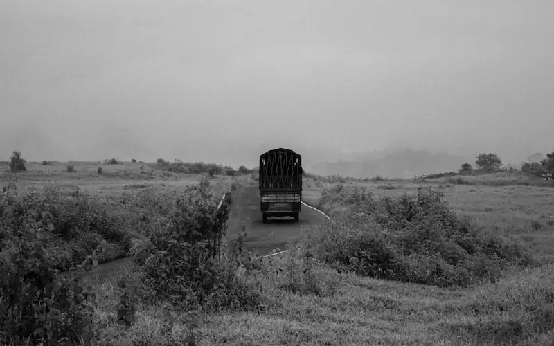

Scope 3 for corporates & MSMEs
Helping companies understand their value-chain emissions — and helping the MSME vendors behind them measure, reduce and report with confidence.
Most company emissions come from suppliers, transport and travel. We help companies and their MSME vendors measure and cut them.
Emissions across the value chain
Scope 1 covers a company's direct emissions; Scope 2 the electricity and heat it buys. Scope 3 covers all other indirect emissions in its value chain — from the goods it buys and the trucks that move them, to employees' journeys and the use of its products.
The GHG Protocol's Corporate Value Chain (Scope 3) Standard sets out 15 categories. Highlighted below are those where Zero Cube focuses.
Companies reporting to CDP said their supply-chain (Scope 3) emissions were, on average, 26 times their operational (Scope 1 and 2) emissions — and only 15% had set a Scope 3 target (CDP–BCG, 2024).
What is driving Scope 3 in India
SEBI BRSR Core — value chain
SEBI's March 2025 circular makes BRSR Core ESG disclosures for the value chain applicable to the top 250 listed companies (by market capitalisation) on a voluntary basis from FY 2025-26, with voluntary assessment or assurance from FY 2026-27. The value chain means upstream and downstream partners each making up 2% or more of purchases or sales, and disclosure may be limited to 75% of purchases and sales by value. Large buyers are therefore beginning to ask key suppliers for ESG data.
Science-based targets
The SBTi Corporate Net-Zero Standard V2.0 (June 2026) expects companies to address significant Scope 3 categories — those making up 5% or more of Scope 3 — with limited, justified exclusions. (Version 1, under which near-term Scope 3 targets apply when Scope 3 is at least 40% of total emissions and cover at least 67% of it, stays open until the end of 2027.)
Buyer programmes such as CDP
Major corporate buyers use CDP's supply chain programme to request climate data from their suppliers, so MSME vendors increasingly receive emissions questionnaires.
EU CBAM — a different requirement
The EU Carbon Border Adjustment Mechanism applies to the embedded emissions of specific goods imported into the EU — cement, iron and steel, aluminium, fertilisers, electricity and hydrogen — with its definitive phase from 1 January 2026. It is calculated per product at installation level, not as a company's Scope 3 inventory, but Indian exporters in these sectors need similar, reliable emissions data.
Why MSME suppliers need support
Data requests from buyers
Large customers increasingly send emissions and ESG questionnaires. Many MSMEs have no inventory, no data system and no one trained to answer.
Staying a preferred supplier
As buyers set value-chain targets, suppliers who can share credible data and a reduction plan are better placed to keep and win contracts.
Access to green finance
Lenders and green-finance programmes increasingly look for basic emissions and efficiency information.
Lower costs
Measuring energy, fuel and waste usually reveals savings — the first step of decarbonisation pays for itself.

Transport and purchased goods are often the biggest hotspots
We start where emissions are largest: key suppliers, logistics partners and employee travel.
Discuss your value chainHow Zero Cube helps
Scope 3 readiness & assessment for corporates
Category screening, hotspot analysis, supplier mapping and a practical data-collection plan, aligned with the GHG Protocol Scope 3 Standard — so your team knows where value-chain emissions sit and which suppliers to engage first.
MSME vendor footprinting & training
Cohort-based training, simple templates and supported footprinting for your MSME suppliers, producing the data buyers ask for and a reduction plan. MSMEs can go on to Zero Cube certification under our published criteria.
Employee engagement
Employee commuting and business-travel surveys (Scope 3 categories 7 and 6), plus an optional personal lifestyle footprint and Net Zero for Life sessions that inspire healthier, low-carbon habits.
Logistics & purchased goods
Practical approaches for transport and distribution partners and key purchased materials — often the largest Scope 3 hotspots.
Sources
- GHG Protocol — Corporate Value Chain (Scope 3) Standard
- CDP & BCG (2024) — supply chain Scope 3 emissions 26× operational emissions
- SEBI circular, 28 Mar 2025 — ESG disclosures for value chain (BRSR Core)
- SBTi Corporate Net-Zero Standard V2.0 (June 2026)
- European Commission — Carbon Border Adjustment Mechanism
Take part — in your own capacity
Experts, MSME vendors, schools, institutions, corporates, NPOs, students and village groups work together as members.
Membership payments open soon, once our bank account is active. No payment is collected now. Other ways to take part: Take the free pledge · Learn free · Volunteer